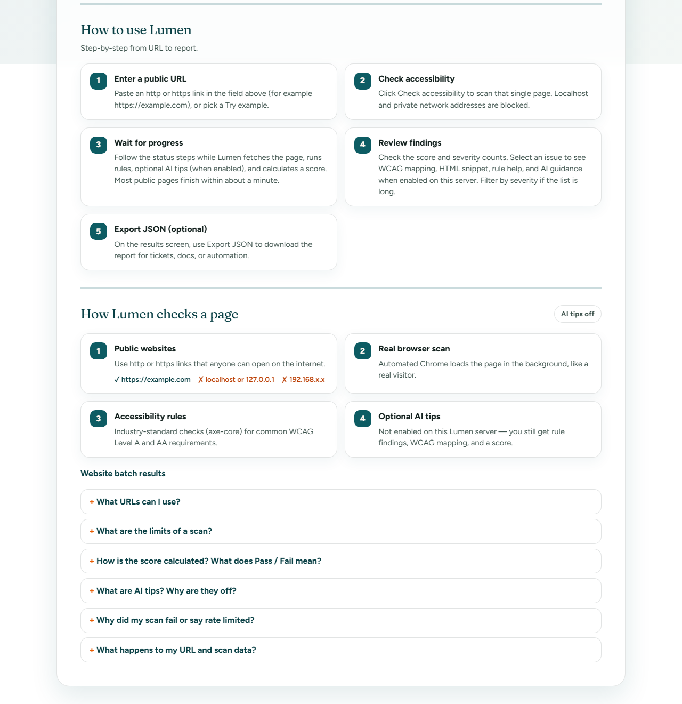
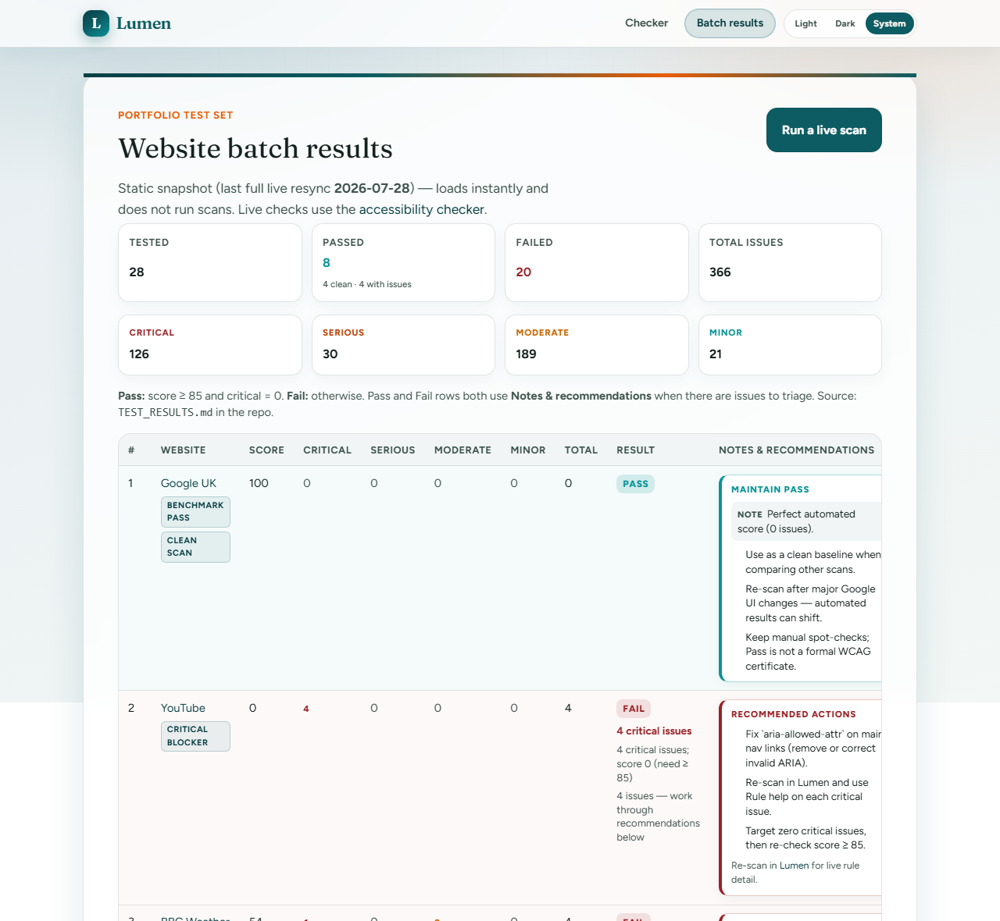
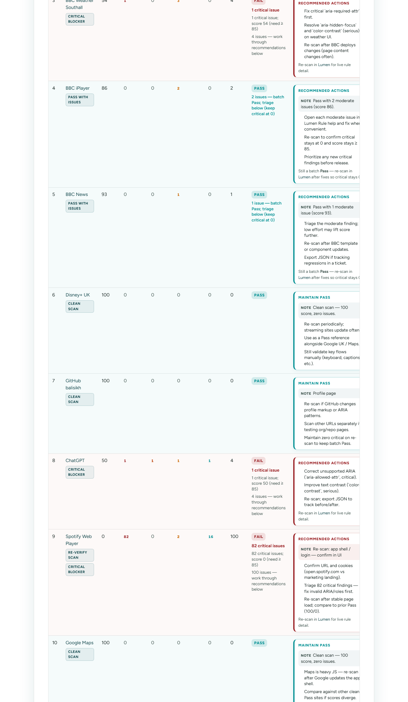
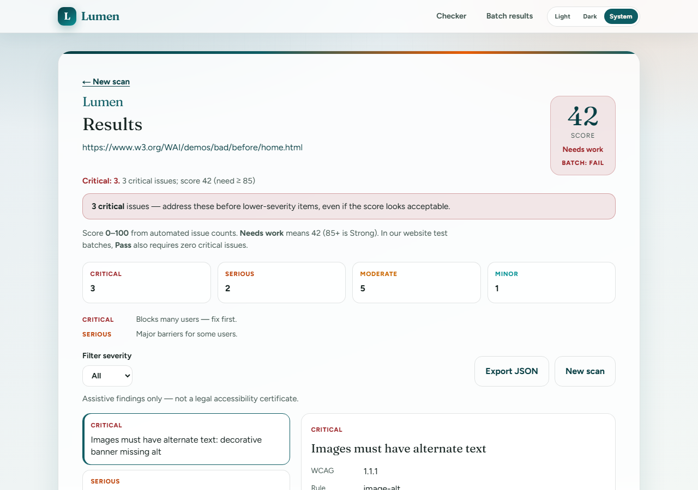

AI-Based Web Accessibility Checker
Repository: github.com/balisikh/ai-based-web-accessibility-checker · Local: http://localhost:4376
Lumen scans a public URL with Playwright + axe-core, returns a score, severities, rule help, optional AI tips, and JSON export.




| Metric | Value |
|---|---|
| Websites tested | 28 |
| Passed | 8 (4 clean · 4 with issues) |
| Failed | 20 |
| Total issues | 374 |
Pass rule: Score ≥ 85 and Critical = 0.
Passed sites: Google UK, BBC iPlayer, BBC News, Disney+ UK, GitHub (balisikh), Google Maps, Wikipedia, example.com
| Area | Status |
|---|---|
| Scan UI, Playwright + axe | Done |
| Rate limiting, persistence, JSON export | Done |
| Optional AI tips, anonymous use | Done |
| PDF export / accounts / crawl | Not yet |
During local testing the app briefly showed unstyled plain text (e.g. nav labels run together). The design was not removed — CSS failed to load.
Symptom: White page, black text; HTML OK but stylesheet returned 500 from a stale/corrupt .next build on port 4376.
Cause: On low-memory Windows, Turbopack could crash compiling globals.css, leaving a broken build that still served HTML.
Fix (commit 541ec96):
dev / build default to webpackweb/scripts/fix-styles.ps1 — stop server, delete .next, rebuild, restartweb/README.md — confirm CSS status 200 in DevTools → NetworkResolution: After clean rebuild, UI matched screenshots again (header, gradient, card, batch table). Images in this PDF show the intended layout.